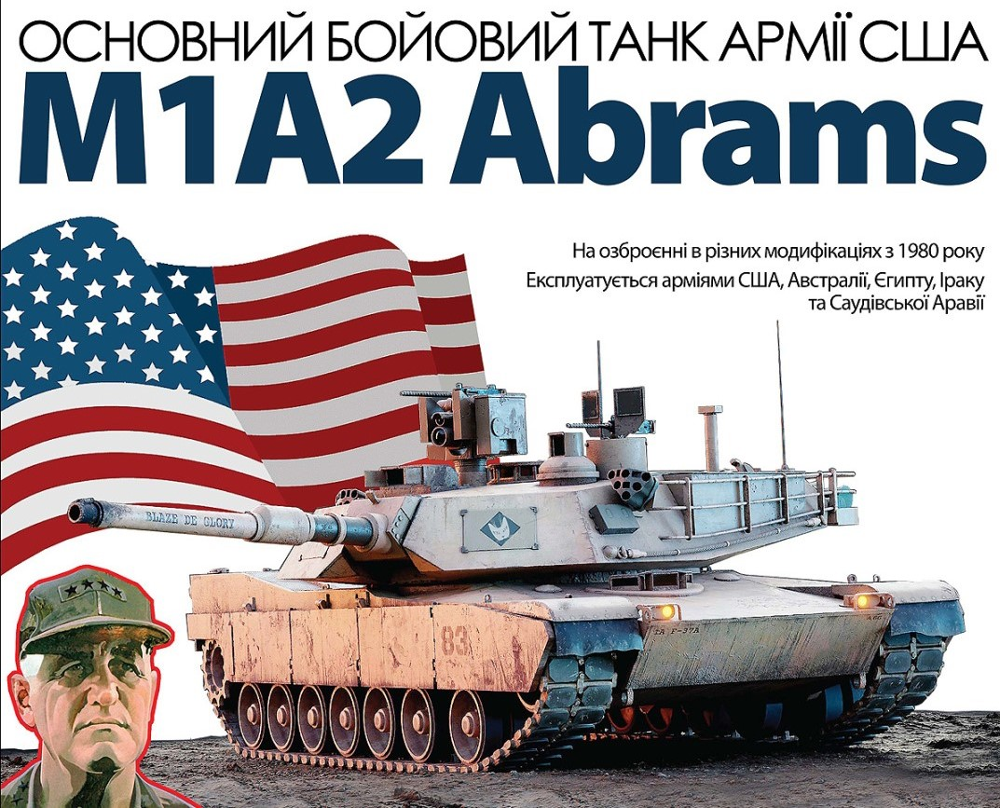
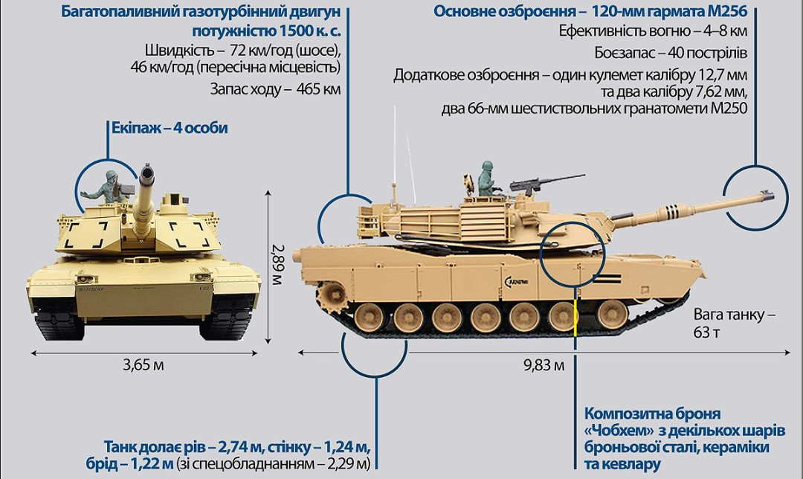
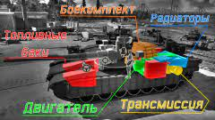
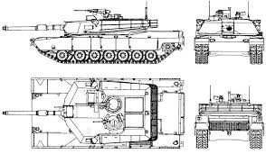
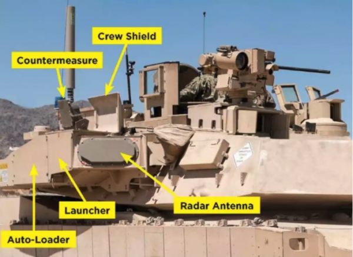

Abrams — це одні з найкращих танків у світі. Ми також надаємо необхідні запчастини, всі логістичні питання будуть організовані якнайшвидше. Звісно, на це знадобиться час. Ми також узгоджуємо цю поставку з нашими союзниками", — сказав на брифінгу президент США.
Основний бойовий танк Abrams M1 був розроблений компанією Chrysler Defense та випускається під брендом General Dynamics. Ця машина роками стоїть на озброєнні в ЗС США. Також Abrams використовують військові Єгипту, Австралії, Марокко, Польщі, Саудівської Аравії та ще ряду держав Сходу.
Перший Abrams був побудований у 1979 році, та поступив в експлуатацію в 1980 році і все ще залишається в строю, щоправда, вже в інших версіях, після численних модернізацій. Усього на цей час було вироблено близько 8800 танків Abrams різних модифікацій.
М1 «Абрамс» є одним з найважчих танків сучасності, його бойова маса перевищує 62 т. Одночасно, в тут вперше використану низку новаторських рішень, включаючи комп'ютерну систему управління вогнем і відокремлене від екіпажу розміщення боєзапасу.
Танк виконаний за класичною схемою компонування - з управлінням в передній частині машини, бойовим відділенням в середній частині і моторно-трансмісійним в кормовій. Екіпаж складається з командира, навідника, заряджаючого та механіка-водія. У бойовому положенні механік-водій розміщений напівлежачи.
Корпус та башта

Корпус та башта — зварені. У їх передніх частинах застосовано багатошарове пасивне бронювання у вигляді модулів комбінованої броні, створеної на базі англійської броні "Чобхем", яка також використовується на британських танках "Челленджер". Також танк має хімічну, біологічну та ядерну системи захисту. Починаючи з 1985 року на танках "Абрамс" встановлюється 120-мм гладкоствольна гармата М256, стабілізована у двох площинах. Це ліцензійний варіант німецької гармати Rheinmetall 120, яка зараз використовується на танках сімейства Leopard 2. Гармата здатна вести вогонь як і звичайними підкаліберними та кумулятивними снарядами, так і спеціальними бетонобійними та картечними снарядами.
Боєкомплект

Боєкомплект M1A1 - з 40 пострілів: 34 з них розміщені у ніші башти. Допоміжне озброєння машини представлене 7,62-мм кулеметом М240, спареним з гарматою, та другим таким же кулеметом, встановленим перед люком заряджаючого. На башті встановлено крупнокаліберний 12,7-мм зенітний кулемет М2. Боєкомплект - 11 400 набоїв калібру 7,62 мм і 1000 набоїв калібру 12,7 мм. На бортах башти встановлено два 66-мм шестиствольних гранатомети М250 для постановки димової завіси.
Модифікації

Модифікації. Незабаром за першою серією з'явився M1A2, який відрізнявся від попередньої версії цифровими системами зв'язку та наведення, тепловізором та покращеним навігаційним обладнанням. M1A2 SEP приніс Абрамсу ще більш високі стандарти, що включають цифрові карти, потужніший бортовий комп'ютер і поліпшену систему охолодження. До складу броні було додано збіднений уран, що суттєво зміцнило захист проти всіх типів снарядів.
На "Абрамс" встановлено одну з найсучасніших систем управління вогнем фірми Hughes Aircraft. В основний приціл навідника вбудовані покращений лазерний далекомір та тепловізійна камера, приціл має стабілізацію у 2 площинах. Денний канал має дві кратності збільшення - 3 та 9,5; тепловізійний - 3 та 9,8. Лазерний далекомір здатен точно прораховувати дальності від 200 до 7990 метрів. На випадок виходу з ладу основного прицілу (у який цілеспрямовано б’ють противники) передбачений резервний телескопічний приціл - шарнірний Kollmorgen Мodel 939 з 8-кратним збільшенням. Командир танка зазвичай користується зображенням з основного прицілу навідника, за необхідності він може вести вогонь з гармати замість навідника. На М1А2 встановлено панорамний тепловізійний приціл - прилад спостереження командира CITV. Також тепловізійний прилад нічного бачення встановлений для механіка-водія.
Комп’ютерна система

Abrams «нафаршировано» комп’ютерними системами, які дозволяють вести бій 21 століття, користаючись багатьма параметрами. Електронний балістичний обчислювач з високою точністю розраховує кутові відхилення для стрільби з гармати і спареного з нею кулемету. У нього автоматично вводяться значення дальності до цілі, швидкість бічного вітру, кутова швидкість цілі та кут нахилу гармати. Крім того, вручну вводяться дані про тип снаряда, барометричний тиск, температуру повітря та навіть данні про ресурс каналу гармати.